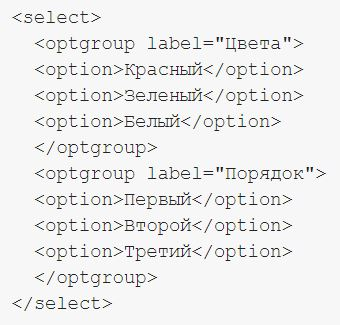
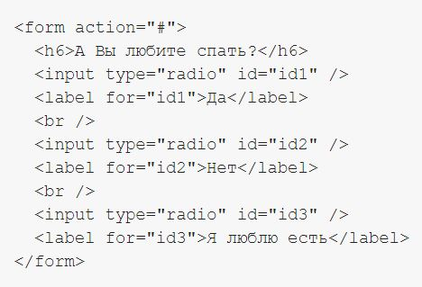
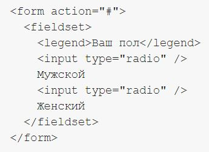
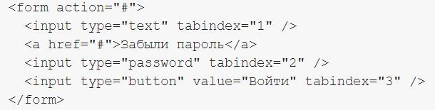

Тег "optgroup" позволяет логически и визуально объединить элементы select-а:
Эти теги позволяют семантически выделить, что было до изменения на сайте и что стало после. Текст, заключенный в тег "del" зачеркивается, а заключенный в "ins" — подчеркивается:
Этот тег нужно(!) использовать во всех формах. С помощью этого тега задаются метки элементам формы. Иными словами, при клике мышью на текст в теге "label" переводится фокус к соответствующему элементу формы, что существенно упрощает навигацию по форме. Например, этот тег просто незаменим в голосовалках:
В данном примере не нужно мышкой целиться в radio-инпут, теперь чтобы выбрать нужный вариант ответа, достаточно нажать на сам текст, заключенный в "label"
Тег "fieldset" логически группирует элементы формы. С помощью тега "legend" можно задать название группе. Визуально группа выделяется рамкой вместе с меткой:
Этот тег определяет порядок перехода между полями формы по клавише «Tab»:
В этом примере по нажатию клавиши «Tab» мы пропускаем ссылку «Забыли пароль»